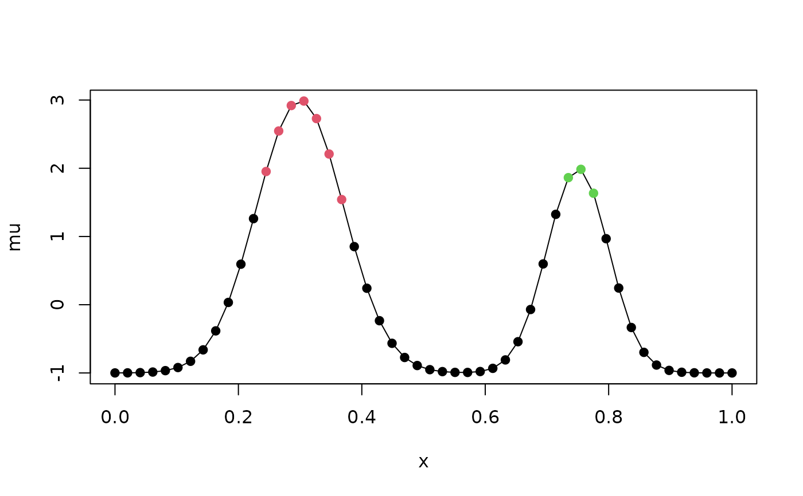

excursions.regions computes connected (contiguous) regions where a
Gaussian random field jointly exceeds a level with high probability. The
first region is the largest connected region \(D\) that is found with
\(P(X(s) > u, s \in D) \geq 1 - \alpha\).
The nodes of the region are then removed, and the search is repeated for
the second largest region, and so on. Each region individually satisfies
the probability requirement, and the regions do not overlap.
Usage
excursions.regions(
alpha,
u,
mu,
Q,
type,
graph,
n.iter = 10000,
vars,
rho,
method = "EB",
ind,
max.regions = Inf,
min.size = 1,
growth = c("bound", "rho"),
n.starts = 10,
min.prominence = 0,
max.threads = 0,
seed,
verbose = 0
)Arguments
- alpha
Error probability for each region.
- u
Excursion level.
- mu
Expectation vector.
- Q
Precision matrix.
- type
Type of region,
'>'for positive excursion regions and'<'for negative excursion regions.- graph
The neighbourhood graph that defines which nodes are connected, given as a symmetric sparse matrix where the non-zero off-diagonal elements are the edges, or as an
fm_mesh_2dobject, in which case the vertex graph of the mesh is used. The default is the graph of the non-zero elements ofQ.- n.iter
Number or iterations in the MC sampler that is used for approximating probabilities. The default value is 10000.
- vars
Precomputed marginal variances (optional).
- rho
Marginal excursion probabilities (optional).
- method
Method for handling the latent Gaussian structure:
- 'EB'
Empirical Bayes (default)
- 'QC'
Quantile correction, rho must be provided if QC is used.
- ind
Indices of the nodes that can be included in the regions (optional).
- max.regions
The maximum number of regions to compute. The default computes all regions.
- min.size
The minimum number of nodes of a region. Regions with fewer nodes are not computed.
- growth
How the regions are grown from the node with the largest marginal probability:
- 'bound'
The region grows by the neighbour that decreases a lower bound of the joint probability the least (default). This prefers nodes that are strongly correlated with the region.
- 'rho'
The region grows by the neighbour with the largest marginal excursion probability.
- n.starts
The maximum number of start points for growing a region in each connected component. The start points are the local maxima of the marginal excursion probabilities in the component, largest first, and the largest region over the start points is kept. Local maxima in the largest region found so far are skipped, and do not count towards
n.starts.- min.prominence
The minimum prominence of a local maximum for it to be used as a start point, on the standardised scale \((\mu - u)/\sigma\). The prominence is how far the standardised margin must decrease from the maximum before a higher maximum can be reached, so small values remove maxima that are caused by noise in the mean. The largest maximum of each component is always used.
- max.threads
The number of threads that the program can use. The default, 0, uses the default number of threads of OpenMP.
- seed
Random seed (optional).
- verbose
Set to TRUE for verbose mode (optional).
Value
excursions.regions returns a list with the elements
- regions
A list with the node indices of the regions, largest first.
- P
The estimated joint excursion probability of each region.
- P.err
The Monte Carlo standard errors of
P.- labels
A vector with the region of each node, where 0 means that the node is not in a region.
- E
The largest region, as an indicator vector.
- F
The excursion functions of the regions, as a sparse matrix with one column for each region. See the details.
- rho
Marginal excursion probabilities.
- mean
The mean
mu.- vars
Marginal variances.
- meta
A list containing various information about the calculation.
Details
A connected region can only contain nodes with marginal excursion
probability at least \(1-\alpha\), so the search is done
within each connected component of these nodes. In each component, a
region is grown from a start point, which gives a sequence of connected
regions where each region contains the previous one. The joint excursion
probabilities of all regions in the sequence are computed with one run of
the sequential importance sampler, and the largest region with
probability at least \(1-\alpha\) is kept. The start points
are the local maxima of the marginal excursion probabilities in the
component, computed on the standardised scale
\((\mu - u)/\sigma\) to avoid ties for probabilities
close to one. Up to n.starts local maxima are tried, largest first,
since the largest maximum does not always give the largest region, and
the largest region over the start points is kept. Local maxima in the
largest region found so far are skipped. Finding the largest connected
region is a hard combinatorial problem, and the region that is found is
not guaranteed to be the largest one. The joint probability of each returned
region is however computed as in excursions().
With growth = 'bound', the node added in each step is the one that
decreases the Hunter lower bound of the joint probability the least. This
uses the pairwise failure probabilities of neighbouring nodes, which
are computed from the marginal variances and the covariances between
neighbours. These are obtained from the selected inverse of Q. Edges of
graph that are not in the sparsity pattern of the Cholesky factor of
Q are used for connectivity, but not for the bound.
Each region has an excursion function, which is given for the nodes of
the region and for their neighbours. A region \(R\) is the largest
set in a sequence of growing connected sets, and the excursion function
at a node of the region is the joint excursion probability of the
smallest set in the sequence that contains the node, so the region is the
set where the excursion function is at least \(1-\alpha\).
At a neighbour \(j\) of the region, the excursion function is the
joint excursion probability of \(R\) together with \(j\). These
are computed for all neighbours with one run of the sampler, and if a
neighbour that could be in the region has a probability of at least
\(1-\alpha\), it is added to the region. The excursion
function is zero at the nodes of the other regions and at all other
nodes, and it is used by continuous() to compute continuous domain
regions.
After a region is found, its nodes are removed, and the remaining nodes of
its component are split into new components that are searched in the same
way. Regions grown from the other start points of the component
are reused in the new components if they do not overlap the removed
region, so these start points do not need to be computed again. Every node
with marginal excursion probability at least \(1-\alpha\) is a
region of size one, so without max.regions or min.size, the regions
cover all such nodes.
The regions are computed jointly for all nodes in mu, with the other
nodes integrated out, so each start point requires a Cholesky
factorisation of Q. Components with a single node are computed directly from the
marginal probabilities.
References
Bolin, D. and Lindgren, F. (2015) Excursion and contour uncertainty regions for latent Gaussian models, JRSS-series B, vol 77, no 1, pp 85-106.
Author
David Bolin davidbolin@gmail.com
Examples
## A field on a line with two bumps
n <- 50
Q <- sparseMatrix(
i = c(1:n, 2:n), j = c(1:n, 1:(n - 1)),
x = c(1, rep(1 + 0.9^2, n - 2), 1, rep(-0.9, n - 1)) / (1 - 0.9^2),
dims = c(n, n), symmetric = TRUE
)
x <- seq(0, 1, length.out = n)
mu <- 4 * exp(-(x - 0.3)^2 / 0.01) + 3 * exp(-(x - 0.75)^2 / 0.005) - 1
res <- excursions.regions(
alpha = 0.1, u = 0, mu = mu, Q = Q, type = ">",
min.size = 3, seed = 1, max.threads = 1
)
res$regions
#> [[1]]
#> [1] 13 14 15 16 17 18 19
#>
#> [[2]]
#> [1] 37 38 39
#>
res$P
#> [1] 0.9219503 0.9347214
plot(x, mu, type = "l")
points(x, mu, col = res$labels + 1, pch = 19)
